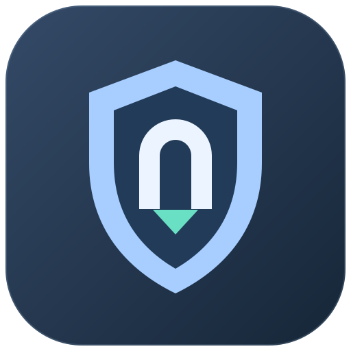
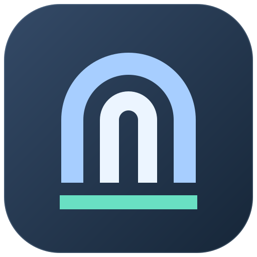
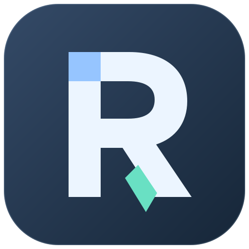
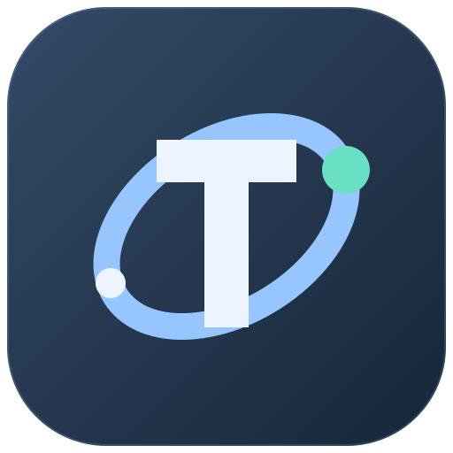
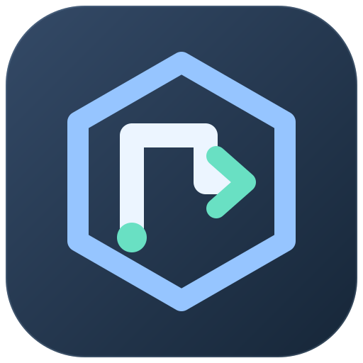
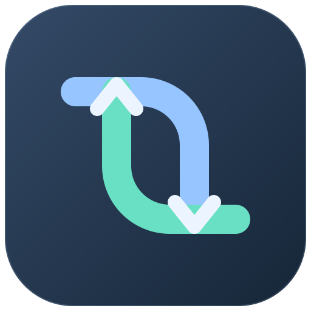

01
Портал

Щит с проходом: защита и туннель.
В небольшом размере

Щит с проходом: защита и туннель.

Чистая геометрия, хорошо видна в трее.

Монограмма R с направлением движения.

Соединение и устойчивый канал.

Сеть, маршрутизация и защищённый выход.

Два протокола в одном клиенте.